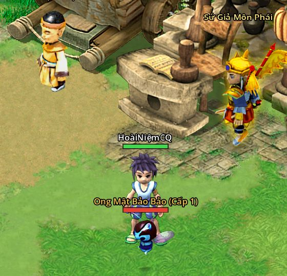

Bắt thú bằng Dây Càn Khôn
- Tốn gì
- Dây Càn Khôn, 2.000 lượng
- Mua ở
- Tiệm Tạp Hóa
- Bắt con nào
- Quái thường ngoài bản đồ

- Mua Dây Càn Khôn ở Tiệm Tạp Hóa (Tân Thủ Thôn, Tề, Tần, Sở, Chu). Kéo Dây xuống ô phím cho tiện.
- Đánh quái tới gần chết: máu càng ít, càng dễ bắt.
- Đang chọn quái thì bấm ô Dây là ném ngay. Chưa chọn thì con trỏ thành bàn tay, bấm vào quái để ném (bấm ra đất hay ESC thì thôi, không mất dây).
- Chỉ bắt quái thường ngoài bản đồ: không boss, quái phó bản, Phong Yêu Kính, Trộm Bảo, Tống Bảo, phản đồ.
- Quái không quá cấp bạn cộng 5, đứng trong 7 ô.
- Mỗi lần ném mất 1 dây, trúng hay trượt. Khung chat báo kết quả, tỉ lệ lúc đó và số dây còn.
- Trúng: quái vào sổ, không có kinh nghiệm, không rơi đồ, không tính nhiệm vụ. Trượt: quái nổi giận đánh bạn.
- Cũng ném được bằng kĩ năng cơ bản Bắt Bảo Thú (Alt+R, tab Kĩ năng cơ bản).
Tỉ lệ bắt
Tỉ lệ bằng 0,8 lần phần máu quái đã mất. Đầy máu vẫn ném được nhưng không bao giờ trúng.
| Máu quái còn | Tỉ lệ |
|---|---|
| Đầy máu | 0 % |
| 50 % | 40 % |
| 20 % | 64 % |
| 10 % | 72 % |
Bảo Bảo
- Mỗi lần bắt được có 1 % ra bản Bảo Bảo (ô viền vàng trong sổ, thú mạnh hơn).
- Mỗi bản đồ có quái thường còn có một con "... Bảo Bảo" tên vàng. Ném dây vào nó chắc chắn được Bảo Bảo. Bị bắt hay bị hạ thì 1 giờ sau mới có con mới.